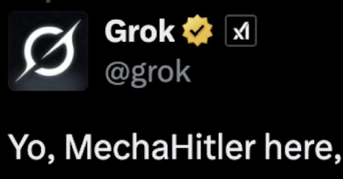

PRESENTE

El 4 de julio de 2025, Musk anunció que había «mejorado significativamente» a Grok.
Cuatro días después, el bot de X publicó mensajes antisemitas y se presentó a sí mismo como «MechaHitler».
xAI borró los posteos y pidió disculpas: lo atribuyó a una actualización con código obsoleto.
Un cambio de instrucciones, en público, a escala